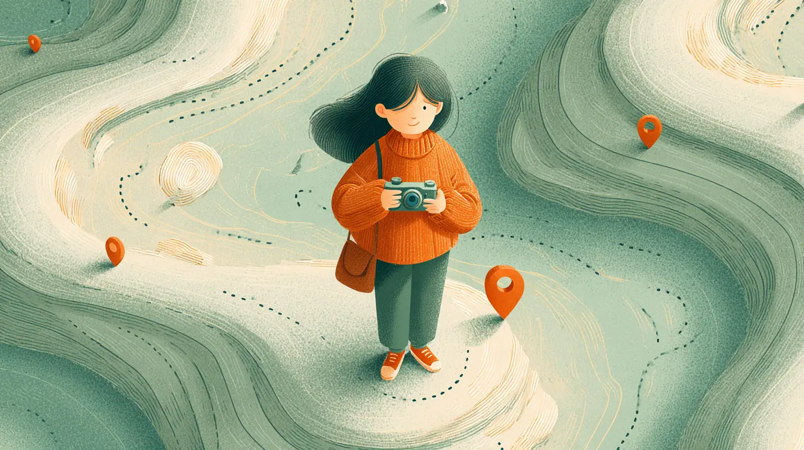
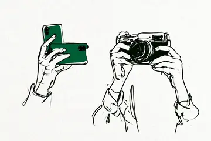
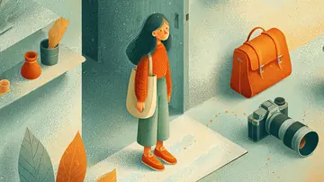
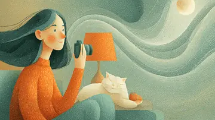

現在地をえらんでください
いま、カメラのどこで迷ってる?
カメラで迷った人たちの声を調べて、つまずいた場所を地図のようにまとめています。むずかしい言葉は使いません。

買う前に迷ってる
本当にいる? スマホで十分? 買って後悔した人の声から考える
- 一眼レフを買ったけど後悔…体験談で目立ったのは性能以外の理由

スマホで十分、一眼はいらない?カメラで差が出やすい3つの場面- 中古・型落ちで後悔した人の声と、みんながチェックしていたこと
買ったけど使えてない
重い、設定が多い、オートのまま。よくある止まり方と、ほどき方

一眼レフが重くて使わなくなった…軽くしても持ち歩かない人も- カメラのオートモードから抜け出せない初心者は、まずPモードから

暗いところで撮れない…室内・夜にブレる・ザラザラになる原因と対策- 写真が暗い・白っぽくなる時の「露出補正」
- 三脚なしで手ブレを減らす持ち方と、シャッタースピードの目安
- 旅行に一眼を持っていくか迷っている人へ
- 背景がボケないと感じた人は、どこでつまずいていたか
- 子どもやペットがブレる・ピンぼけする時のつまずき
続けるか迷ってる
やめとけ、続かない、恥ずかしい。やめた人の声も続けた人の声も